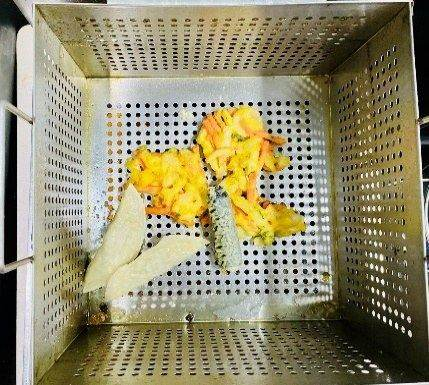
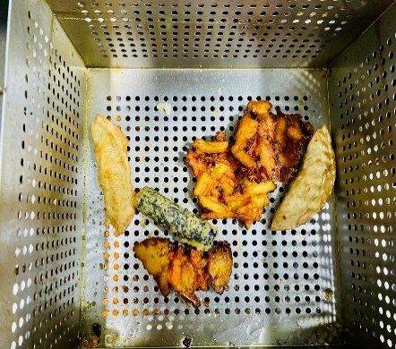
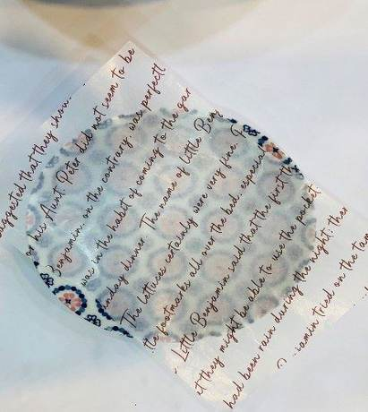
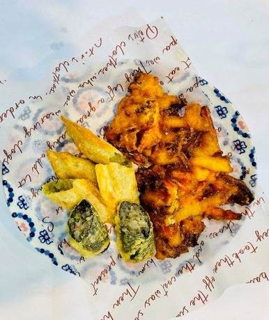
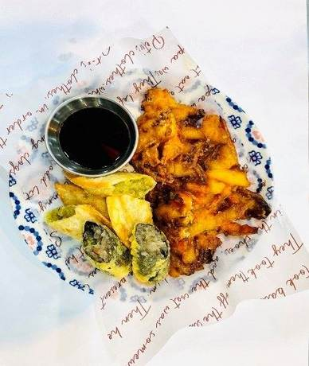

| 메뉴명 | 모듬튀김 |
|---|---|
| 판매가격 | 5,500원 |
| 원재료 | 아이센스 모듬튀김, 간장 |
| 사용 부자재 | 덮밥접시, 소스볼 |
| 메뉴특징 | 바삭한 야채, 김말이, 만두튀김을 한 번에 즐길 수 있는 튀김 메뉴 |
조리방법

1
냉동 모듬튀김 1봉을 뜯어 180도 튀김기에 넣고 3분간 튀긴다.
냉동 모듬튀김 1봉을 뜯어 180도 튀김기에 넣고 3분간 튀긴다.

2
기름을 충분히 제거한다.
기름을 충분히 제거한다.

3
접시에 유산지 1장을 깔아준다.
접시에 유산지 1장을 깔아준다.

4
튀김을 각각 2등분으로 잘라주고, 야채튀김은 크기가 클 경우, 3등분 해준다.
튀김을 각각 2등분으로 잘라주고, 야채튀김은 크기가 클 경우, 3등분 해준다.

5
소스보에 간장 1펌프(10g)을 담아 함께 제공한다.
소스보에 간장 1펌프(10g)을 담아 함께 제공한다.